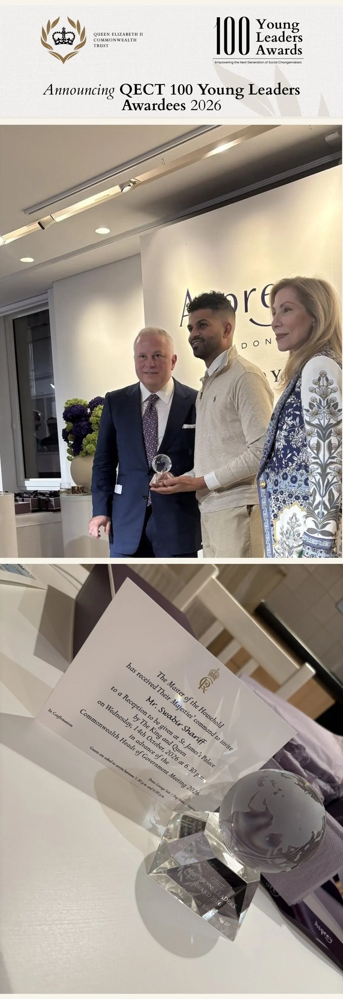
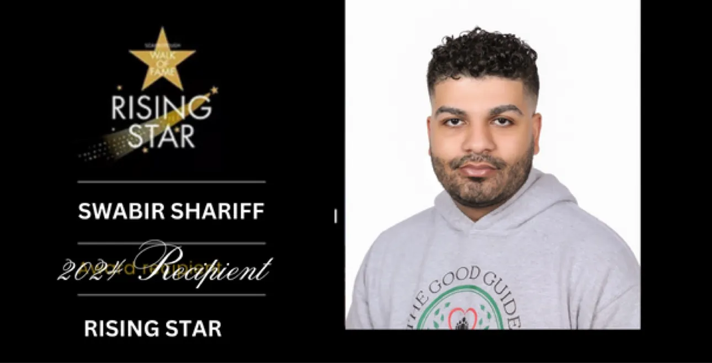
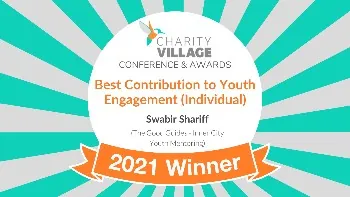

2026
QECT 100 Young Leaders Awardee 2026
The Queen Elizabeth II Commonwealth Trust (QECT) 100 Young Leaders Awards 2026. Presented at Asprey in London in October 2026, and received at St James's Palace.

Founder & Executive Director, The Good Guides · Leadership advisor and speaker
Pronounced Swa-beer Sha-reef
Toronto · Scarborough · On the ground since 2020
“Changing the starting line for young people — not cheering them on from it.”
I am a founder and executive who built an institution from nothing, and I speak and advise where decisions get made — in boardrooms, at policy tables and on conference stages — on leadership, building organizations that last, and changing the systems that decide where people start.

On the record:
About
Born and raised in Scarborough, I grew up in Toronto Community Housing. I watched the people around me — friends, and my own brother — get pulled toward the justice system, while the services meant to help them never reached them: young people could not see themselves in those organizations, had no mentors, and were handed solutions designed by outsiders. So they disengaged entirely.
My executive career came first. As a Director of Security in Scarborough, leading round-the-clock (24/7) operations for a major retail centre, I watched young people drift through my corridors every day — skipping school, with nowhere that spoke to them — and I started informal hangouts with them, right there. The Good Guides grew out of those conversations: founded in 2020, while I was still in the role, and built as a youth-led mentoring organization — services designed with young people holding the keys, not prescribed at them. I later stepped away from that career to lead it full time.
Our work for ages 11–18 spans one-on-one mentorship, youth leadership, violence prevention, sports and co-op placements — including school-based violence-prevention work delivered with community partners and funded by the City of Toronto.
“The services didn't fail because people didn't care. They failed because the young people they were built for couldn't see themselves in them. So we built something they could.”
In October 2026, that work carried me to London as one of the QECT 100 Young Leaders, and it reflects where I now work: at the tables where strategy, investment and policy are decided.
National media have turned to my voice on youth violence and community leadership — a Global News “Making a Difference” feature in 2021 and a CP24 Tonight panel in 2022 among them. And the through-line of everything I say is a philosophy, not a slogan.
What I Bring
Four things earned on the ground in Scarborough — not studied from outside it — and brought into every advisory engagement, briefing and keynote.
I grew up in Toronto Community Housing in Scarborough, so every strategy conversation I join starts from having been the young person those services were built for. It keeps one question in front of any plan: who is this actually for — and can they see themselves in it?
I built The Good Guides from the ground up and run it still, with governance, delivery and accountability carried personally. The judgment I bring to a boardroom or a briefing comes from operating: real budgets, real scrutiny, real stakes.
Before the non-profit, there was the executive career — a Director of Security in the community I grew up in, accountable around the clock for a site that never really closed. Running complex operations before I ever led a non-profit gave me a vantage point few people in a boardroom carry alongside the street view.
I helped lead a City of Toronto Youth Violence Prevention partnership on the ground in Scarborough, and helped lead the youth engagement that kept Scarborough's young people connected through COVID. I know the funding table from both sides — accountable for public investment, and candid about what applications and due diligence never show. The policy view and the street view, in one person.
Accolades & Recognition
From Scarborough to international recognition — every honour below is on the public record: an inductee roll, or the awarding organization's own listing.
The Queen Elizabeth II Commonwealth Trust (QECT) 100 Young Leaders Awards 2026. Presented at Asprey in London in October 2026, and received at St James's Palace.

Featured in the Ambassador Spotlight, September 2026, as founder of The Good Guides. I was a One Young World Global Delegate in 2025 — sponsored by Chanel to attend the summit in Germany.
Read the profile →Under my leadership, The Good Guides received a Toronto Community Champion Award (Honourable Mention) from the City of Toronto in 2025 — civic recognition for the mentors and young people doing the work.
Inducted April 2024, for founding The Good Guides and leading full-time youth engagement and violence prevention in Scarborough.
Official inductee page →
Awarded in 2021 — the award's inaugural year — chosen from over 500 submissions across the non-profit sector, for opening doors for young people through The Good Guides.
Award winners listing →
Advisory & Speaking
Advisory & Speaking EnquiriesAdvisory & Speaking
Leadership, offered in three forms — advisory, briefings and keynotes — grounded in a record of building an institution and changing how systems serve people. The youth work is the evidence base; the subject is how organizations earn trust, allocate resources and lead change.
Ground-level judgment for institutions setting strategy — on youth, mentoring and violence prevention, and on the harder question underneath them: how an organization earns the trust of the people it serves. Program design, allocation and governance, tested against what actually happens in communities like Scarborough.
The outcomeYouth programming young people actually show up to — designed with the community it serves, not prescribed to it.
For conferences, institutions and leadership gatherings that want a speaker with a record — not a résumé of talks about other people's work. The keynotes are the three signature talks below — “Keys to the Whole House,” “Change the Starting Line” and “Every Piece of the Whole.”
Also drawn on in panels and briefings:
The outcomeAn audience that leaves with a working model for leading change — in a system, an organization, a community — not just a story about one.
Workshop, panel and fireside formats for leadership teams — practical, honest, and built around your mandate and your community, not a template.
The outcomeA leadership team aligned on how trust is earned — with practical moves drawn from what actually works in Scarborough's neighbourhoods.
Advisory engagements typically run 8–12 weeks. Four stages, in order:
Site visits, youth and staff interviews, and a hard look at your data — who shows up, who doesn't, and why.
A written plan: staffing, scheduling and program-model changes, in plain language your board can act on.
Two working sessions a month while your team puts the changes in place — problems solved as they surface.
A review against the targets we set together at the start: what moved, what didn't, what comes next.
How it starts: Enquiry → an introductory conversation → a written proposal that sets out the scope and timeline.
Signature Talks
Why young people don't need a seat at someone else's table — they need real authority over the work — and people genuinely behind them as they use it. Audiences leave with a working model for sharing decision-making with the people a program serves, and an honest account of the trust that follows when you do.
Best for: youth-serving organizations, funders and public institutions redesigning programs with the communities they serve.
The answer to youth violence — and to every system that leaves people behind — is redesigning where people start, not asking more effort from the people the start failed. Audiences leave with a framework for finding the starting lines inside their own systems, and the first moves to change them.
Best for: conferences, education and civic audiences taking on entrenched outcomes.
Drawn from the oldest idea in my philosophy: every one of us is a working part of a whole none of us can see in full. Audiences leave seeing their own people differently — every person in the room as a working part of the result, and leadership as the work of letting each piece land.
Best for: leadership teams, non-profit boards, and corporate and community partners building cultures where people carry real ownership.
Each talk is delivered as a keynote, a fireside conversation or a panel — in the room or virtual.
Selected Appearances
QECT 100 Young Leaders Awardee 2026.
A panel discussion on youth violence, speaking as executive director of The Good Guides.
Featured in the “Making a Difference” segment, interviewed by Susan Hay.
The Philosophy
“Keys to the whole house.”
My philosophy is simple: don't offer young people a seat at the table, or a key to one room — hand them the keys to the whole house. A seat at the table is an invitation to be heard on someone else's terms; those keys mean the work is theirs to lead — the direction, the decisions, the outcomes — with real support behind them as they go. In that house, everyone is a productive piece of the whole — young people, mentors and community alike, nobody a guest and nobody a passenger. It built The Good Guides, and it is the through-line of every talk, briefing and advisory engagement I take on.
Testimonials
“Your discussion about this yesterday was perfect, especially addressing the N word, and great for them to start considering everything you mentioned.”
“They loved your visit and keeping talking about you.”
“The roundtables were the most highly rated part of the evening!”
Media & Public Record
Panel guest on CP24 Tonight discussing youth violence, February 2022, speaking as executive director of The Good Guides.
Watch on YouTube →Profile feature on the founder of The Good Guides: mentorship, violence prevention, sports and co-op placements for ages 11–18.
→ Apr 10, 2024Official inductee profile: I founded The Good Guides in 2020 to mentor young people in my own neighbourhood, with co-op placements for Scarborough youth — one strand of the 10,000+ young people mentored across Toronto, from its base in Scarborough.
→ Jun 27, 2023City news release naming The Good Guides among the funded organizations.
→ Nov 16, 2021Profile by Mike Adler, November 2021 — inside the Good Guide Ambassadors' open door, where young people choose how they want to help.
→Verified biography, accolades and contact details in one PDF. My full biography is there too, for programme committees and speaker bureaus.
Questions, Answered
The questions organizers and committees ask most — answered the same way everything on this page is: straight.
A keynote, a fireside conversation, a panel, or a leadership briefing — and, for organizations that want the deeper work, an advisory engagement. The three signature talks are the keynotes; every format is built from the same record and the same philosophy.
Fees are enquiry-only. They are never posted, and they depend on the scope of the engagement — the format, the audience, and what is being asked of me. The written proposal sets the fee out plainly before anything is agreed, so there are no surprises on either side.
It starts with an enquiry, then an introductory conversation, then a written proposal that sets out the scope and the timeline. Nothing is confirmed until the proposal is agreed — by both of us.
I am now accepting engagements for 2027. Earlier dates are worth an enquiry — if the calendar allows it, I will say so, and if it doesn't, I will say that too.
Yes. After a scoping conversation, the talk is tailored to your audience and your sector. The signature talks are the spine; the examples and the emphasis are shaped to the room.
I am based in Toronto and speak across Canada and the Commonwealth. Travel beyond the GTA is arranged at cost, and it is set out in the proposal.
Very little: a handheld mic and a clicker are all I need. Everything else is agreed in the written proposal.
Ask on the enquiry. Recording and streaming are agreed in the written proposal, so the terms are clear before the day.
Yes. Talks for high schools and elementary schools are part of my record, and school and student audiences are welcome — they come through the same enquiry route as everyone else.
With me personally. The details — including the one boundary that comes with it — are set out in the note in the Contact section below.
The full shape of it is set out under “Advisory — a typical engagement” on this page: four stages, from discovery and program assessment through to a 90-day results review. It starts the same way as a booking — enquiry, conversation, written proposal.
Fast — every enquiry is read and answered by me personally, never an assistant or an inbox queue. If you're working to a deadline, name it in the enquiry and I'll match it where I can.
Contact & Enquiries
One enquiry, answered personally, within two business days. Tell me what you're planning — an advisory engagement, a leadership briefing, a keynote, or a media request — and I'll reply myself.

One short form, straight to my inbox — no email app needed. Tell me what you're planning: the audience, the date you're working to, and what you'd like me to bring to it.
Send an EnquiryThe form opens in a new tab and takes about two minutes. Prefer direct email? Write to swabir.shariff@thegoodguides.org.
Advisory and speaking engagements are contracted with me personally, independent of The Good Guides. Enquiries are answered personally. To avoid any conflict of interest, personal advisory engagements are not undertaken with The Good Guides' funders or partners.